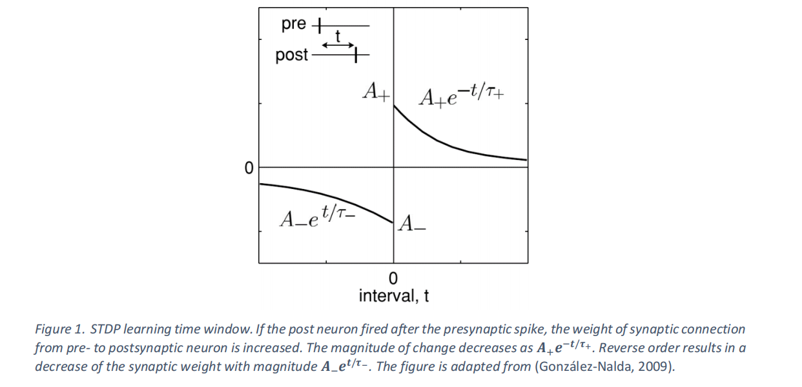
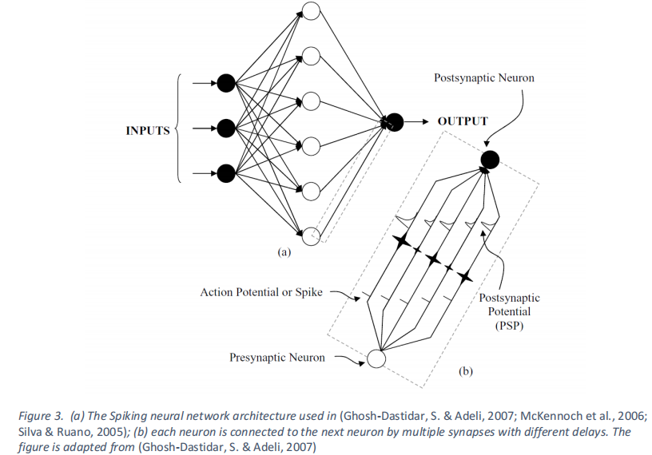
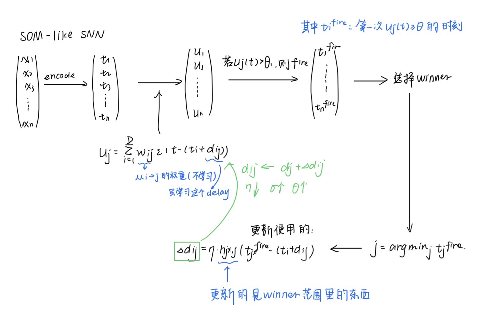
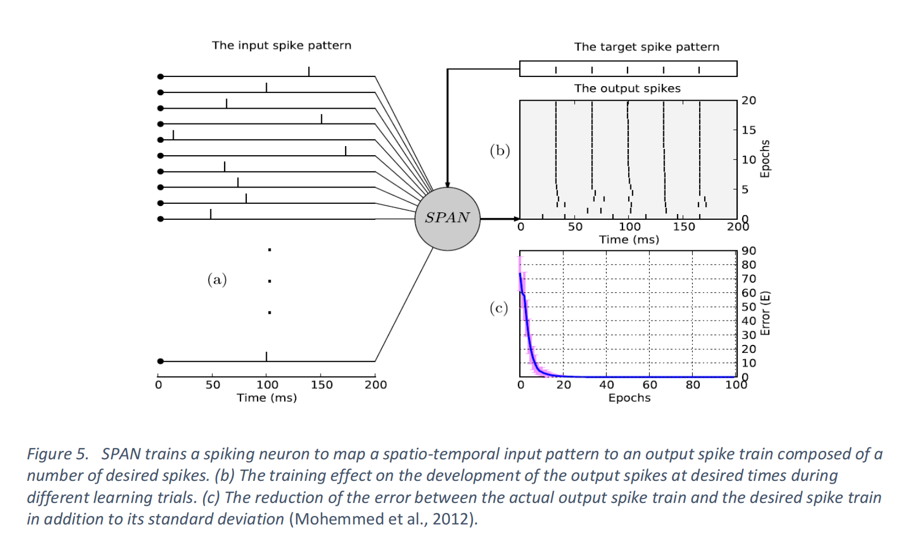
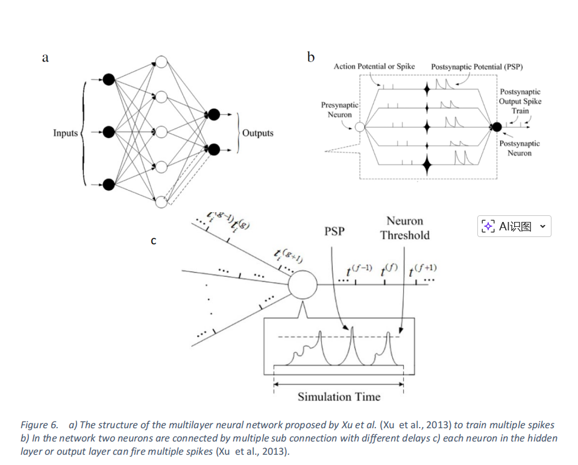
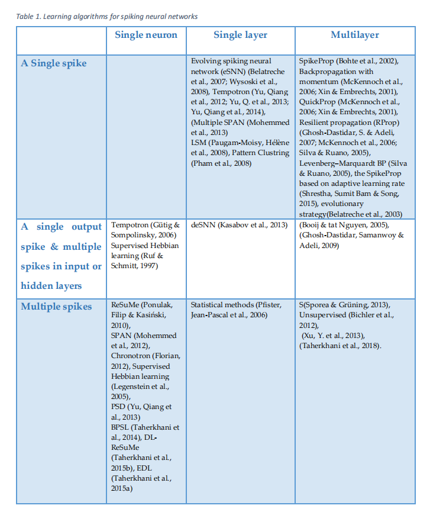

本片论文的原文地址：A review of learning in biologically plausible spiking neural networks。
- 论文发表时间：2020.2
0. introduction¶
-
前情提要：ANN的灵感本来就来源于生物神系统，但是和生物饿神经元相比，人工神经网络的抽象程度高，且无法捕捉生物神经元复杂的动态时间特性，这个就是SNN的诞生契机。
-
由于SNN能够捕捉生物学原理的神经元丰富的动态特征，并且表示成和时间、频率和相位等不同信息维度，因此它们提供了一种非常有前景的计算模式，并且可能模拟初大脑中复杂的信息处理过程
-
SNN还有处理海量数据和利用脉冲序列进行信息表示的潜力
-
SNN也是培育低功耗硬件
-
-
SNN中的时间编码
-
传统观点认为是频率编码→\(Information∝firing \text{ } rate\)
-
问题在于这和人类大脑处理信息的速度是由很大不同的
-
比如说视觉神经中\(10层神经元\times 10ms反应时间\)\(=100ms\)
-
如果使用频率编码就要统计一段时间内的spike数量，需要100m或更长的时间才能统计频率，从而导致没有足够时间计算频率
-
-
所以可以使用\(\text{spike timing coding }\)
两个神经元：
Neuron A: spike at 10 ms Neuron B: spike at 12 ms这种 相对时间差 本身就携带信息。
这种编码方式叫：Temporal coding（时间编码）
或者：Time-to-first-spike coding
-
使用时间编码的优势
-
更快：只需要一个spike就可以传递信息
-
更省能量：频率编码需要很多spike，但是时间编码只需要几个spike就可以了
-
-
-
新的研究进展：
-
生物学家发信多种形式的生物突触的可塑性→是由神经元当店调控的。
-
这个和不同形式的突触权重和延迟学习的SNN模型实相符的
-
1. 回顾SNN学习算法的生物学背景¶
神经元通过突触相互连接，形成复杂的结构。文献综述表明，设计脉冲神经网络（SNN）学习算法时需要考虑的重要因素包括：神经元模型、突触通信、网络拓扑结构以及信息。
1.1 SNN神经元模型¶
1.1.1 Hodgkin–Huxley 模型（1952）¶
最真实的生物学模型：4维微分方程、描述离子通道电导、能真实复现神经电生理行为
\(C\frac{dV}{dt}=I−g_{N_a}m^3h(V−E_{N_a})−g_Kn^4(V−E_K)−g_L(V−E_L)\)
-
优点就是生物真实性高
-
缺点就是计算量大
-
所以不适合大规模SNN
所以我们需要的是简化模型
1.1.2 LIF（Leaky Integrate-and-Fire）¶
是常见的SNN神经元
模型：
\(τ_m\frac{dv_m(t)}{dt}=−(v_m(t)−E_r)+R_mI(t)\)
-
\(v_m(t)\)：膜电位
-
\(E_r\)：静息电位
-
\(\tau_m\)：膜时间常数
-
\(R_m\)：膜电阻
-
\(I(t)\)：输入电流
（1）直观理解：¶
-
漏电：
-
\(−(v_m(t)−E_r)\)
-
意思就是如果膜电位高于静息电位，电压就往回掉→类似于漏电电容\(leaky\)
-
-
输入电流：
-
\(R_mI(t)\)
-
表示：突触输入→电流→提高膜电位
-
（2）输入电流的计算：¶
\(I(t)=W⋅S(t)\)
其中\(W=[w_1,w_2,...,w_N]\)表示突触权重。
而\(S(t)=[s_1(t),s_2(t),...,s_N(t)]\)表示输入spike信号
含义就是每个输入神经元：\(spike\times weight\) 贡献一个电流
（3）spike train¶
\(s_i(t)=∑_f δ(t−ti^f)\)
-
\(ti^f\)：第f和spike的时间
-
\(δ\)：Dirac函数
为什么要使用\(δ\)? 因为spike实在某个精准事件发生的瞬时时间
电压
^
| /\
| / \
|____/ \____
t0
time →
|
|
|
只保留：spike发生的时间。这就是 \(δ\) 函数。
（4）神经元何时释放spike¶
当膜电位达到阈值：
\(v_m(t) \geq V_{th}\)
神经元产生：output spike；然后reset回到\(E_r\)这个电位上
之后短时间内不能再发spike，这段时间：\(t_{ref}\)叫做refractory period(不应期)
（5）整体流程总结¶
输入spikes
↓
突触权重加权
↓
产生电流 I(t)
↓
膜电位动态变化
↓
达到阈值
↓
产生spike
↓
reset + refractory
输入电流的计算：
当：
\(V>V_{threshold}\)
时，就会产生spike，然后reset
-
优点是非常简单，计算快
-
缺点是生物真是性质较低
1.1.3 SRM（Spike Response Model）¶
这个也是一种简化模型
特点：用核函数藐视spike对膜电位的影响
1.2 神经元如何处理输入spike¶
1.2.1 Intergrator（积分型神经元）¶
机制上就是：输入spike→累加
神经元会在较长时间窗口内输入：
\(V(t)=∑PSP_i(t)\)
只要超过总和阈值就可以了。
特点：
-
时间窗口较长
-
对 spike 精确时间不敏感
合适：rate coding
1.2.2 Coincidence Detector(同步检测)¶
CD神经元只对同时到达的spike敏感。
如果两个spike时间差很小：\(Δt<ϵ\) 就会出发spike。
特点：
-
对 时间非常敏感
-
适合 temporal coding
这个在生物学中相关的对应内容就是听力定位等等
1.3 SNN的学习机制——突触可塑性（Synaptic Plasticity）¶
1.3.1 什么是突触可塑性与学习的关系¶
之所以需要进行突突触的改变：
突触强度（weight）会根据神经元活动发生改变
也就是说
\(w_{ij}→w_{ij}+Δw\)
所以我们在这里的学习就是改变连接的强度
1.3.2 学习种类¶
| 类型 | 含义 | |
|---|---|---|
| Unsupervised | 无标签，靠局部规则 | |
| Supervised | 有目标信号 | |
| Reinforcement | 奖励驱动 |
重点在于unsupervised
1.3.2.1 Unsupervised learning¶
learning is based on local events
每个突触只看：
- pre neuron 有没有发 spike
- post neuron 有没有发 spike
- 它们的时间关系
（1） 无监督学习的本质机制¶
可以抽象成：
\(Δw=f(\text{pre spike,post spike,t})\)
这也就是：权重变化=spike之间的关系
（2）Hebbian learning¶
核心的经典规则就是：Cells that fire together wire together
也就是说：同时激活→连接增强
即：A经常触发→B也跟着触发
那么：A→B的连接变强
（3）STDP：无监督学习的具体实现¶
- spike timing dependent plasicity：基于脉冲时间的突触可塑性
\(t=t_{post}−t_{pre}\)
即：按照时间顺序来决定是增强还是减弱
情况1：pre在前（因果）
- 学习规则
\(\text{如果t>0 (即pre在前)}\)
\(Δw=A_+e^{−t/τ+}\)
权重增加（LTP）
情况 2：post 在前（非因果）
- 学习规则
\(t<0\)
\(Δw=−A_−e^{t/τ−}\)
权重减小
STDP其实是在学习：谁更像原因→谁就会被加强

（4）怎么做到classification¶
输入就是有一个结果，然后强化对自己有因果关系那个输入模式
这样就可以达到一个神经元=一个模式的关系(这个也不一定，反正相近的模式有可能内分到一个神经元上面)
输入 → STDP → 神经元自己变成 feature
也就是：STDP 通过“谁先触发谁”来强化连接，使不同神经元专门响应不同输入模式，从而实现“自动分类”。
1.3.2.2 监督学习（Supervised learning）¶
大脑中可能有指导信号，来自于感觉反馈和其它神经元群
小脑的监督学习的重要位置，是大脑的“误差矫正系统”
核心机制：强链接——带动其它的连接学习
A1 → 很强（老师）
A2 → 很弱（学生）
当A1触发B产生spike，B被“老师”强行激活
然后stdp发生，看A2的前后发生顺序，决定激活 or 削弱
输入 spike
↓
teacher neuron（控制输出）
↓
post spike 被固定
↓
STDP 更新连接
↓
网络逐渐学会正确映射
1.3.2.3 强化学习Reinforcement learning¶
在STDP上面叠加一层奖励，用来放大或抑制STDP的学习方向
权重变成：\(Δw=STDP×reward\)
1.3.2.4 延迟学习Delay learning¶
相较于传统的神经网络只学习\(w\)，SNN可以学\((w,d)\)
这个delay learning是在教系统自动学会对齐时间，从而达到coincidence detection的条件
只是用STDP的缺点就是只会寻找单个的强特点，而不是整体的特点
spike timing
↓
coincidence detection
↓
STDP（基础学习）
↓
+ teacher → supervised
+ reward → reinforcement
+ delay → timing alignment
1.3.3 信息编码（information encoding）¶
神经元使用spike传递信息，但是这个信息到底在哪里
（1）rate coding¶
信息来自于发送了多少次spike
\(information∝firing rate\)
（2）temporal coding¶
信息来自于发送的时间
顺序/时间差 本身就是信息
特点：非常快速/信息密度高/更加接近生物大脑
而且我们上面提到的STDP、coincidence decection、delay learning非常依赖timing
temporal coding的几种方式：
-
time-to-first-spike——谁先发，就代表信息重要
-
Rank-order coding（ROC）——看第几个发，自定义那个重要。不好！一点噪音顺序就改变
-
Synchrony（同步编码）——一起发，代表一个特征
-
Phase coding / latency coding——本质上都是时间差编码
-
Polychronization——一组神经元在不同时间精准配合
1.3.4 SNN的拓扑结构¶
拓扑结构简单理解就是：这些神经元是怎么连接在一起的
1.3.4.1 三种拓扑的连接结构¶
（1）feed-forward
输入→中间层→输出
（2）Recurrent
A → B → C
↑ ↓
← ← ← ←
网络是有记忆的，过去的状态会影响现在
（3）hybrid
混合状态，因为不同任务需要不同的能力
-
前馈 → 快速处理
-
循环 → 长期依赖
1.3.4.2 生物大脑的结构¶
大脑不是简单的网络，而是clustered network（簇结构）
-
簇结构是指神经元被分成很多“团”
-
每个团内部连接很紧密
-
不同团直接通过“hub”连接
scale-free network（无标度网络）
特点：
-
少数节点连接很多（hub）
-
多数节点连接很少
就和互联网一样
生物意义上就是高效+稳定+抗干扰
拓扑结构是“连接方式”，而 scale-free 是“连接数量分布的规律”，两者是不同层面的概念，但可以同时存在。
1.3.4.3 拓扑的变化¶
因为大脑的特点是：核心区域很稳定，边缘区域经常变化
所以SNN中也有一种模型叫做：evolving SNN（演化网络）
evolving SNN（演化网络）：
- 这个模型不仅仅学习经典的的权重w，还学习连接关系，甚至会长出新的连接/旧的连接删除
2. 学习算法的重要组成部分¶
2.1. Learning a single spike per neuron¶
（1）spikeprop¶
有点类似由于强行将ANN的训练方法搬运到SNN上面，区别就是在SNN里面的spike是不连续的，所以梯度不好算
会出现局部最优和有些神经元不发的效果
spikeprop与CNN的区别和问题在于：¶
-
神经元输出的是离散时间，
-
这种发放过程通常是不可导或者很难求导的
| ANN | SpikeProp |
|---|---|
| 输出是数值 | 输出是 spike 时间 |
| loss = 数值误差 | loss = 时间误差 |
| 反向传播 | 反向传播 |
SpikeProp的解决方法：¶
-
不要对脉冲本身进行求导
-
而是对脉冲发放的时间进行求导
-
然后用这个近似梯度做类似的BP训练
所以说SpikeProd就是把反向传播改造后，用在‘脉冲发放时间’上的方法
spikeprop的基本内容¶
SpikeProp 的灵感来源于经典的反向传播算法。SpikeProp 是一种多层脉冲神经网络，已成功应用于分类问题。在该网络中，两个神经元通过具有不同权重和延迟的多条连接相互连接(见下图)。

图b中，我们可以看到，一个神经元产生的spike可以被不同的管道，因为不同的PSP，再到达下一个神经元。最后这个接受的神经元的最终输出就是所有PSP的时间叠加的最终结果与其它基于梯度的方法类似，SpikeProp 也基于误差函数梯度的估计，因此存在局部最小值问题。此外，静默神经元或不激活神经元的存在也会阻碍梯度的计算（这个的意思就i是有时候spike根本没有发出相关的信号，我们的梯度链条可能会断掉。这个训练目标依赖于spike time，没有spike time就没有梯度入口）。
spikeprop的改进¶
-
Back-propagation with momentum
-
QuickProp
-
RProp
-
Levenberg–Marquardt BP
-
adaptive learning rate 的 SpikeProp 变体
这些方法是在改进：收敛速度、稳定性、学习率、梯度更新效率、对局部极小值的鲁棒性
spikeprop的模型假设的限制¶
模型假设每个神经元只发一个spike。
因为如果发了很多的spike，我们就要找spike的关系，再计算上就会变得非常复杂
所以只发一个spike我们就可以简化成：
\(E=\frac{1}{2}∑_j(t_j−t_j^d)^2\)
-
\(t_j\)：实际发放时间
-
\(t_j^d\)：期望发放时间
这样我们的反向传播就更加容易建立
spikeprop与神经元模型绑定很深，每次换一个神经元模型（SRM、LIF等）对应的膜电位，阈值等所有的形式都不一样，所以一定发生改变
因为这个局限性，有人采用进化策略训练突触权重和延迟，和spikeprop相比，该方法性能良好，但是训练算法耗时较长
（2）SOM-like SNN(自组织映射)¶
基于自组织（Self-Organizing）+ Hebbian + delay 学习的 SNN 聚类模型。
核心思想是：不学习“权重”，而是学习delay，让输入spike在时间上对齐，从而触发某些神经元→实现聚类

这样子，通过循环，相似输入会把同一片区域一起塑形，因此映射成相邻神经元。
（3） eSNN(evolving SNN)¶
结构是会变化的，使网络会自己长大，所用的编码就是SOC，并只看第一个spike
问题是：忽略了后面的spike，丢掉了temporal信息，表达能力弱
eSNN是基于Hebbian learning的，也就说类似于“一起活动的神经元，连接会加强”这种思路；比较适合online learning,不需要像普通深度网络那样将整个数据集反复训练很多论；先将输入先编码成spike timing（谁先发spike，谁后发spike的顺序来表示信息）
evolving主要是指：当先输入样本到来的时候，网络不会只是按照固定参数去计算。网络会根据样本决定（让已有的神经元代表这个模式or新建一个神经元来表示一个新的输入模式），所以是会evolving的。
批评了eSNN的重点，只利用每个输入突触上的first spike，后面的spike基本忽略。

L1：contrasr cells（初级对比检测，比如亮暗变化、局部刺激）
L2：orientation cells（这一层像是在检测方向特征，比如横线、竖线、斜线）
L3：complex cells（主要的学习发生在这里）
L4：Class（这一层是分类输出层，把 L3 的结果整合起来，输出类别 1、类别 2 等）
在L3中输入编码和学习主要依赖于first spike / rank order，所以这个是eSNN的主要缺陷
（3）deSNN¶
在eSNN的基础上进行改变。
我们在上面可以看到，原始的eSNN只用first spike，忽略后续的spike，从而它的表达能力是有限的，尤其是编队复杂的脉冲式模式
Rank Order learing¶
任然保留Rank Order learing，也就是
\(w_i^{init}∝rank(t_i^{first})\)
谁先spike→初始权重大
谁后spike→初始权重小
这一部分负责快速建立初始模式
SDSP¶
加入了Spike Driven Synaptic Plasticity，也就是deSNN的关键
规则1：收到spike→权重增强
\(\text{if spike arrives}: w↑\)
规则2：没有收到spike→权重减弱
\(\text{if no spike: w↓}\)
因为这个会依赖后面的spike的发生，所以很好的规避了eSNN的问题
整体看来，就是我们先用rank-first的方式，得到一个基础的w，之后使用SDSP的方式继续对w进行微调
eSNN/deSNN的神经元模型不是标准的生物模型，而是“基于顺序”的简化模型。
它和神经元的标准模型的区别在于：
-
只关系spike的先后顺序，不关心精确时间间隔、连续时间动力学
-
no leakage in PSP
-
正常的LIF模型是：\(τ\frac{du}{dt}=−u+∑inputs\)
-
这个里面有个-u的泄露
-
（5）Tempotron¶
是一个有监督学习的SNN neuron，用于做二分类
做分类（0/1）
核心规则就是如果和预期不符，就削弱权重，反之增加
局限在于只能做简单分类，扩展性差
改进：
Encoding→Trempotron→readout
特点：使用每个latency coding，每个neuron只发一个spike
现有单脉冲方法的共同问题：¶
-
eSNN / deSNN → 不是真正的生物动力学模型（无 leakage）
-
Tempotron → 只能二分类
-
Yu 方法 → 仍然 single spike
2.2 Learning multiple spikes in a single neuron or a single layer of neurons¶
上面2.1中提到的eSNN/deSNN,Tempotron,Yu等方法都有各自的缺点，因为这些方法有共同的制约：输出是single spike
所以它们：表达能力有限且时序信息利用的不充分
多个spike可以很好的丰富信息，从而得到正确的表达信息的方式。
multiple spikes 不仅表示“有没有发放”，还编码了“什么时候发、发了几次、间隔如何”，因此时间结构本身成为可用信息。
这个也有生物证据支持——斑马鱼，精准spike timing控制动作→也就是说序列本身就是信息。
所以我们需要找到一个让neuron发multiple spikes的学习方法。
（1）supervised hebbian¶
用监督版的Hebbian （类STDP）可以学时间模式，但是有缺陷
但是有两个问题：
-
不保证收敛（训练可能不稳定，会发散or震荡）
-
即使已经正确了但是还在修改权重（已经学对了，但是还在更新）
模型不稳定，容易破坏已学的知识
（2）statistical methods（统计方法）¶
用概率方法：\(maxP(在目标时间发spike)\)
缺点：
-
难以学习复杂的 spike train
-
没有实际的应用
（3）ReSuMe¶
是一种监督学习算法，可以训练神经元产生“指定的多spike输出序列”
目标：\(输入\text{spike pattern}→期望的输出\text{spike train}\)
机制：¶
-
基于STDP+anti-STDP
-
STDP：增强正确的时序
-
anti-STDP：抑制错误的时序
-
-
引入teacher spike train（核心）
-
有一个老师信号：目标输出时间序列
-
模型做法：如果当前输出≠teacher→调整权重
-
-
本质上是一个Widrow-Hoff
\(w←w+η(target−output)\)
只是换了spike形式
解决问题：¶
-
能生成multiple spikes——不再是single spike
-
避免了silent neuron的问题——因为现在有了teacher的信号→所以强制激活
-
保留了生物合理性——序列性质的t
-
支持online learning
但是ReSuMe依旧是传统的神经网络的范式（调权重）
任务形式：¶
文中写的是：
\(S(t)=[s_1(t),s_2(t),...s_N(t)]\)
这表示输入时N个输入突触上的spike train。
各个符号：¶
-
\(s_i(t)\)：第i个输入突触上的脉冲序列，即某个输入通道在时间轴上的发放情况
-
\(s_d(t)\)：desired output spike train
- 也就是teacher希望神经元输出的目标序列
-
\(s_o(t)\)：actual output spike train
- 这个就是让当前的神经元真实发出来的spike序列，训练目的是：\(s_o(t)\approx s_d(t)\)
它的核心学习公式¶
\(\frac{dω_i(t)}{dt} = [s_d(t)-s_o(t)][a+\int_{0}^{+∞}T_W(s)s_i(t-s)ds]\)
-
外层\(s_d(t)-s_o(t)\)表示当前时刻t，到底应该鼓励增强，还是鼓励减权
-
内层\(a+\int_{0}^{+∞}T_W(s)s_i(t-s)ds\)表示第i个输入突触，对当前时刻的学习更新应该贡献多少
-
\(a\)：这个的作用是做一个整体偏差预修正项
-
如果实际输出spike数量比目标多，那么这个项倾向于整体减权
-
如果实际输出spike数量比目标多，那么这个项倾向于整体增权
-
如果没有这个项的话，单靠局部STDP型的更新，有时候学习会比较满，因为我峨嵋你只有在具体某个输入spike和某个输出spike做配对
-
而a提供了一个更加全局的修正，让训练更快
-
-
\(\int_{0}^{+∞}T_W(s)s_i(t-s)ds\)
-
这个是最核心的“时序相关的部分”
-
它表示：在当前时刻 t 之前，第 \(i\) 个输入突触有没有在不久前发过 spike；如果发过，而且越接近当前时刻，贡献越大。
\(T_W(s) = \begin{cases} Ae^{-s/\tau}, & s \ge 0 \\ 0, & s < 0 (\text{这个因果窗口，和未来无关}) \end{cases}\)
-
这一段说明：这是一个指数衰减窗口，距离但概念时刻越近的历史输入spike，影响越大；越早以前的spike，影响越小。
-
A：幅值，控制更新强度。
-
\(τ\)：时间常数，控制“回看多远”，越大看的就越久
-
-
-
执行逻辑¶
（1）当目标spike到来时
假设目标希望在时刻\(t_d\)发送spike
那么：\(s_d(t_d)=1\)
如果这个时候神经元还没有发出对应的输出，就会倾向于增强那些在 \(t_d\) 前不久发过 spike 的输入突触。
因为这些靠近的输入最有可能是“帮助神经元在\(t_d\)发放”的因果证据链
（2）当实际输出spike到来时
假设神经元在\(t_o\)发了一个不该与的spike
那么\(s_o(t_o)=1，s_d(t_o)=0\)，这个时候就会倾向于：减弱哪些在\(t_o\)前不久发过spike的输入提出。
因为这些输入最有可能"导致了这个错误的输出"
（3）反复训练后的结果
经过不断的重复就可以做到：
-
该在目标时刻前起作用的输入连接会被增强
-
导致错误发放的输入连接会被削弱
为什么它可以学别人不会的multiple spike?¶
因为它学习的是\(s_d(t)-s_o(t)\)，在整条时间轴上的误差在学习，所以只要目标里面有多个spike：\(t_1,t_2,t_3\)，就会分别在这些时刻附近增强/键入相关连接就会被奖励/惩罚
ReSuMe的优缺点：¶
-
能学目标spike train——学习的时序的输出
-
是监督学习——目标明确
-
有一定生物合理性
-
能在线学习
ReSuMe的局限¶
-
任然是基于权重调整——传统的ω的调整范式
-
时序控制可能比较敏感
-
多神经元、多层扩展并不天然简单
| ReSuMe | eSNN / deSNN | |
|---|---|---|
| 输入 | spike trains | spike trains |
| 输出 | spike train（时间序列） | 类别 |
| 学习目标 | 对齐时间序列 | 分类 |
| 是否关注精确时间 | ✔ 非常重要 | ❌ 主要看顺序 |
| 输出形式 | 多 spike | 单 spike / 投票 |
| 本质任务 | temporal regression | classification |
（4）SPAN¶
因为ReSuMe有一个隐含的问题：spike train很难优化（不连续、不可微、很难用标准数学工具），所以SPAN的思路就是将其变成连续的
这个和ReSuMe很相似，基本上就是在ReSuMe的基础上做的，区别在于：
ReSuMe：直接在 spike 上做学习（事件驱动） SPAN：先把 spike train 变成连续信号，再用“普通数学方法”去学
SPAN将难处理的spike train变成好处理的连续函数
step1：先将spike train转换成连续信号：¶
-
将原始的\(s(t)→x(t)\)，然后通过卷积：\(x(t)=Σ_kκ(t-t_k)\)
-
这样就可以将每个 spike 变成一个小凸起，从而叠加成连续的曲线
step2：输入输出都变成连续信号¶
-
输入：\(s_i(t)→x_i(t)\)
-
输出：\(s_o(t)→y(t)\)
-
目标：\(s_d(t)→y_d(t)\)
现在的问题就变成了：\(y(t)≈y_d(t)\)
这样就变成了函数拟合的问题
step3：用Widrow-Hoff(Δ rule)学习¶
类似于：
\(Δw_i∝∫(y_d(t)−y(t))x_i(t)dt\)
也就是误差\(\times\)输入信号
step4：再转会spike¶
SPAN的优点：¶
-
可以用标准的数学工具
-
更稳定：不想STDP会局部震荡
-
可以处理复杂的spike train 因为是一个整体悉尼号
SPAN的限制¶
- 因为原始的版本只是训练单个neuron，后来2013年才扩展，分类任务仍退化为single spike的问题

-
左边：每一行表示一个neuron，小竖线表示该neuron在某个时间发spike
- 这整个左边相当于\(\{s_1(t),s_2(t),...s_N(t)\}\)
-
中间进行
- step1：spike→连续信号
\(s_i(t)→x_i(t)\)
- step2：线性组合
\(y(t)=∑_iw_ix_i(t)\)
- step3：匹配目标信号
\(y(t)≈y_d(t)\)
-
右上角结果：就是显示随着epoches的增加输出逐渐对齐的过程
-
右下角就是显示我们的error越来越小
（5）Chronotron version1 E-learnig¶
-
ReSuMe：局部规则，不是严格优化
-
SPAN：转连续，但没有严格对齐 spike 时间
-
SpikeProp：梯度难用（不连续）
Chronotron和ReSuMe的区别在于ReSuMe是一个靠经验逼近的，但是这个方法是有一个明确的loss function，定义了\(\text{E(output spike train,target spike train)}\)
所以这个方法的目标是做精准时间对齐的优化学习
step1：用核函数表示神经元的响应¶
使用SRM+kernel function;
因为每个输入的spike都会产生一个PSP：\(κ(t−t_i)\)
然后将所有的输出叠加：
\(u(t)=∑_iw_i∑_kκ(t−t_i^k)\)
将spike变成连续信号，现在的神经元状态时连续函数\(u(t)\)
step 2：定义 normalized PSP（λ）¶
\(λ_j(t)\)：这个时去掉权重之后的PSP（只有时序）
作用：
-
分离“输入时序结构”和“权重”
-
便于分析和优化
step 3：定义误差函数¶
这里考虑了三种错误：
-
少了spike（insertion error）
-
多了spike（deletion error）
-
时间不对（shift error）
权重更新是：
\(Δw_j=−\frac{∂E}{∂w_j}\)
本质上就是梯度下降。但是梯度时近似的但不是严格解析的
Chronotron不是在做又没有spike，而是把spike从错误的时间移动到正确的时间上面
困难在哪
spike不是连续事件\(\text{spike = threshold crossing}\)
dynamics很复杂：所种spike站之间相互影响、时间依赖强
（6）Chronotron I-learning¶
用ReSuMe的局部规则来近似实现Chronotron version 2
-
基本思想：如果在目标时间里面发了spike：就会有\(\omega\)上升；但是如果有不应该发的，就会抑制
-
ReSuMe的区别：ReSuMe使用的是\(e^{−t/τ}\)
-
I-learning用的是：两个指数之差：\(κ(t)=e^{−t/τ_1}−e^{−t/τ_2}\)，也就是我们说的alpha function
-
\(τ_1\)：控制上升速度
-
\(τ_2\)：控制衰减速度
-
-
使用双整数的原因：它是先上升→然后再下降的，有峰值和时间选择性，双指数可以更加精准的刻画“什么时候更重要”
-
还有一个要注意的区别是ReSuMe有一个\(a(全局变量)\),但是I-learning里面没有这一项；这也意味着更接近严格优化，但是可能会收敛速度慢一点
-
这个方法适合单神经元级别的精确时序学习方法
（7）SWAT¶
SWAT = STDP（时序） + BCM（发放率） → 用发放率来稳定 STDP 的学习，但只能处理 rate coding，不是真正的时间编码方法
STDP（基本的\(\text{pre before post⇒w↑}\) \(\text{pre after post}⇒w↓\)）
BCM 权重更新取决于post-synaptic raie（方法率）
BCM不直接更新权重，而是：调节STDP的“学习窗口强度”
即\(Δw∝\text{BCM factor}×\text{STDP update}\)
BCM是用来稳定学习过程，从而防止SDTP本身容易发散、不稳定的问题
基本流程：
\(\text{spike timing} →\) \(\text{rate →filter}（是一个隐藏层，对输入的发放率做滤波/特征提取）\)
→\(分类\)
缺点：
缺点就来源于这个rate coding：
因为SWAT不建模时间结构，只单纯保留spike per unit time。所以：SWAT 可以区分不同 firing rate（例如 100Hz vs 1000Hz），但无法区分具有相同或相近平均发放率、但时间结构不同的 spike patterns。
（8）DL-ReSuMe（Delay Learning ReSuMe）¶
DL-ReSuMe = ReSuMe（调权重） + 学习突触延迟（调时间），从而更好地对齐输出 spike 的时间
动机：ReSuMe的问题¶
ReSuMe只能通过调整权重→间接影响spike的时间。
但是权重只能控制弱/强，不能直接控制“时间对齐”。结果就是如果spike的时间不对，只能通过权重去隔靴搔痒，慢且不精准
核心思想：引入\(d_i=\text{synaptic delay}\)¶
现在将每个输入变成\(s_i(t−d_i)\)，这种输入信号是可以通过时间平移来进行时间上的对齐
所有的模型都变成：\(输出时间=f(w_i,d_i)\)
-
\(w_i\)：强度
-
\(d_i\)：时间位置
怎么做？¶
Step1：像ReSuMe一样调整权重
-
teacher spike
-
STDP / anti-STDP
Step 2：调整 delay
-
太早→delay增大（推迟）
-
太晚→delay减小（提前）
结果上的优势¶
-
更高的精度（10% higher accuracy）
-
更快的收敛（“much faster learning speed”）
-
能够处理低频/短序列的问题（shorter duration and smaller mean frequency）
-
解决silent window problem（可以将其它时间的spike调过来）
问题：¶
-
delay 只调用一次（后面权重可能改变了）
-
多spike的情况可能会很复杂（不同目标spike会冲突）
解决方案：EDL（extended）¶
-
允许多词调整delay+weight
- 即\((w,d)都是动态更新的\)
（9）LSM¶
这个和前面的内容有很大的区别→不训练网络本身，而是将它当成"动态特征提取器"
LSM = 一个固定的递归 SNN（reservoir） + 一个可训练的读出层，用来把时间序列映射成分类结果
LSM的整体结构¶
\(\text{Input spikes→Reservoir (LSM)→Readout}\)
-
Reservoir：一个随机连接的递归SNN
- 有feedback，有动态，但是不训练权重
-
readout layer
-
一个简单的模型：线性分类器、SVM、Tempotron、Widrow-Hoff
-
作用是从reservoir的状态里面读出结果
-
LSM在做什么¶
-
输入：\(\text{spike train}\)
-
中间：\(动态系统（有记忆）\)
-
reservoir 会产生：
\(x(t)=f(当前输入 + 过去输入)\)
- 输出：class label
原理：¶
因为\(x(t)\)不仅依赖当前输入，还依赖过去输入
一个比喻：¶
LSM：往水里丢石头→波纹扩散
输入spike：类似于扰动
reservoir：把扰动变成复杂动态
readout：看当前“水的形状”判断输入
优势：¶
-
训练简单
-
很强的时间建模能力（recurrent dynamics：自动就有记忆等）
-
泛用性强（语音识别、机器人控制、EEG）
限制：¶
-
reservoir 不训练
-
不可解释性强
-
性能不一定是最优的（没有优化reservoir的结构）
相关改进：¶
因为LSM是一个框架，不是一个固定的模型，所以都是可以改变的
（10）polychronous groups+LSM¶
什么是polychronous group?
- 不同时间发放，但是有固定的时间关系（就是相当于虽然开始的时间不确定，但是每个之间中间的间隔是确定的）→本质上就是一个时间结构pattern
怎么做分类？
我们假设不同类别→激活不同的polychronousgroup
如何训练：
只调整readout neuron的delay，争取让正确的类别更早的spike
优化目标：\(t_{wrong}−t_{correct}↑\)
限制：
-
一个readout 产生一个spike
-
权重不更新
-
性能不如传统方法
整体问题：¶
虽然学习了multiple spikes，但是这种方法只能在“单层神经元or单层”上工作，很难扩展到复杂网络
-
一旦层数扩展，spike数量上涨，\(O(\text{spikes} \times \text{neurons})\)
-
层数上升之后，上一层输出spike train，下一层就要学习它，这样误差的传递时逐渐积累的
-
credit assignment problem：即哪个neuron该为某个spike负责，在multi-kayer+multi-spike上是完全混乱的
2.3 Learning multiple spikes in a multilayer spiking neural network¶
1. 多层结构于多脉冲编码的必要性¶
这个就是经典神经网络理论所提出的，单层perceptron只能做线性可分/多层的则可以做非线性的
这条结论在SNN里面也适用。由Sporea et al.证明multilayer SNN 可以实现 XOR，而单层的不行。
前面2.1和2.2的内容本质上是不足够的，因为无法实现复杂的非线性任务
在只有一层的spike里面，表达的瓶颈是结构深度 的问题，2.2中multiple spikes提升的是时间表达能力。而multilayer提升的是：函数复杂度
| 模型 | 时间表达能力 | 非线性表达能力 | XOR能力 | 时间模式识别 | 层级特征 | 接近生物神经 |
|---|---|---|---|---|---|---|
| 单层 + single spike | × | × | × | × | × | × |
| 单层 + multiple spikes | √ | × | × | √ | × | 部分 |
| 多层 + single spike | × | √ | √ | × | √ | 部分 |
| 多层 + multiple spikes | √ | √ | √ | √ | √ | √ |
| 能力类型 | 来源 | 作用 |
|---|---|---|
| temporal（时间能力） | multiple spikes | 表达时间结构（间隔、频率、pattern） |
| structural（结构能力） | multilayer | 表达复杂函数（非线性、层级特征） |
2. 现有研究的演进和局限性¶
（1）STDP multilayer¶
a. Bichler et al., 2012
这个学习信号的方法只是找到“谁和谁经常一起出现”，完全没有用到label/error.task objective等
怎么做的：
-
两层SNN(input→hidden)
-
然后后hidden neuron→发spike
-
其中每层SNN的更新权重的方法就是STDP
-
-
使用LIF neuron
-
输入时AER视觉事件数据
学习方式：
-
使用local STDP
-
属于unsupeervied learning
特征学习目标：
-
提取：temporally overlapping features
- 经常一起出现的spike→权重大
-
从时间上重叠的spike pattern 中提取特征
问题就是：
-
问题1：STDP太粗糙了，因为使用的LTD是恒定的，而不是根据时间差变化
-
问题2：没有任务目标，这个方法只是发现pattern，但是不知道这个pattern对分类是否有用。所以说这个只是feature extractor，而不是learning system
-
问题3：没有output的引导。hidden layer完全不知到究竟要做什么任务。所以可能没有学到有用的pattern
b. Wang et al., 2014(online learning algorithm for SNN)
1.输入层：把实数变成spike（编码）
输入时：real-valued data
处理方式就是：population coding → spike timing
即：
-
一个数值→用多个neuron表示
-
数值大小→用spike的“发放时间”表示
2.hidden层：用clustering学结构
特点是结构式动态变化的，通过聚类算法进行分类，类似于unsupervised feature grouping
3.output层：用STDP做分类
STDP+anti-STDP
4.编码方式：
输入层：latency coding→用谁先发spike表示信息
hidden层：time to first spike→用第一个spike的时间
output层：rate coding→谁发的spike多→属于哪个类别
5.分类机制：
哪个output neuron发的spike多→属于哪个类别
批评：
-
问题1：各层是“分开训练”的
-
hidden 在做clustering
-
output 在做STDP
-
两者没有联系，导致layer interaction很差，hidden学的东西,output不一定能用上
-
-
问题2：层间协同失败
- 各层都在自己做自己的，没有统一优化目标
-
问题3：编码方式不一样
- 依旧和上面一样，就是三层不统一的问题
-
问题4：动态结构不合理
- 因为没有生物机制证明这个动态架构是合理的
因为上面的都是无监督的，将这个换成有监督的，所以有人尝试用ANN，error+backword的方法
（2）Gradient methods¶
这个就是借鉴了ANN的经典方法。
Gradient methods 就是用误差函数+梯度下降的方法来训练SNN
只是把ANN种的数值输出变成了spike time
其中经典的放就是SpikeProp,SpikeProp就是用梯度把error从output传回hidden
但是这个方法只能学习single spike
（3）Xu 2013¶
这个就是在上面的基础上将single spike转化成multiple spikes
Xu et al. (2013) 属于基于梯度的学习方法，其主要贡献在于将误差反向传播扩展到多 spike 情况，使多层 SNN 能够学习目标 spike train。
Xu 2013做到了multilayer/multiple spikes/supervised
这个是一个里程碑式的方法
核心机制：
- error function
\(E = 0.5 * Σ_j Σ_f (t_P{actual}(j,f) - t_{target}(j,f))²\)
每个spike对齐→算时间差→求和
- 一个关键的假设
这个方法假设actual spike 数 = target spike 数
- 如果不相等？
取较少的那个\(n_l\)→只比较前面\(n_l\)个spike
- 学习规则：
对error求导，得到更新公式。
- 干扰问题：
因为所有的权重都由同一组权重产生，即一个权重同时影响很多t，可能多个权重的同时改变一个spike的梯度，最终导致相互抵消 or 不稳定
使用BPBA原则：Bigger PSP → Bigger Adjustment
相当于只让真正导致spike的输入主导这次的更新
怎么做的？
远离spike的输入→PSP=0→几乎不更新
接近spike的输入→PSP大→疏导更新

-
左边是inputs（输入层），中间是hidden layer（隐藏层），右边是outputs（输出层）。
这个和普通的传统神经网络的唯一区别是：每个神经元输出的不是一个数，而是一连串的spike时间。
传统 NN：$ y_j = 数值$
SNN： \(y_j = \{t₁, t₂, t₃, ...\}\)
-
右边是多子链接
两个神经元之间不是一条边，而是多条。
每个连接都有一个权重，一个delay
\(u_j(t)=∑_i∑_kw_{ij}^{(k)}ε(t−t_i−d_{ij}^{(k)})\)
-
直观的理解：
-
对于一个输入spike，通过不同的delay变成\(t_i+d_1\)、\(t_i+d_2\)、....
-
就是将一个spike展开成为多个时间版本
-
这个是为了：构造一个关于t的函数，用一组base function来逼近目标函数
-
-
-
核心机制
输入：多个spike delay之后的结果
PSP累计：每个spike产生一个PSP：\(ε(t - t_i - d)\)。然后加起来得到\(u(t)\)
这张图显示的就是PSP的曲线叠加，当\(u(t)≥\theta\)时，会产生一个spike
核心问题与批评：
-
直接删除了后面不匹配的spike，强制对齐
-
多个spike会相互干扰
-
BPBA类似于STDP（有生物意义）→但是没有分析其它项的作用
-
和ReSuMe相比，ReSuMe在短时间里面更好，Xu 2013不一定是最优的
（4）基于梯度的SNN学习方法所面临的局限性¶
基于梯度的SNN学习方法存在根本性的困难，尤其再训练多spike输出的时候，这些问题会放大。
基于梯度的学习方法本身就不稳定：
-
在训练的过程种,loss可能突然大幅上升，而不是平滑下降
-
这是因为神经元的膜电位具有两个性质：非线性/非单调
-
这个就导致小的权重变化，可能会导致spike会发生突变→导致spike时间突然大幅度变化
multiple spike会让问题更加严重：
-
每个神经元要发多个spike，每个spike都是一个threshold crossing，这样系统的复杂度就会大度上升，这样训练会更不稳定
-
error很难定义，因为实际输出的spike数量≠目标spike数量。会熬制无法直接一一对应。loss function很难设计
-
但是问题在于多个spike可以编码更多的信息，所以这个是必须的
比较了这么多的gradient方法之后，作者得出结论：基于局部规则的 STDP 可能更适合用于多层 SNN 的学习
3. 转向STDP的局部学习¶
根据上面的分析，我们想要知道有没有不用gradient，而使用STDP做多层监督学习的方法
总体思想是使用STDP和anti-STDP做一个类似监督学习的规则，应用于多层SNN (input/hidden/output都可以发multiple spikes)
（1）常规STDP的问题和改进方法¶
-
问题1：隐藏层没有真正参与学习
-
即没有使用hidden neuron自己的输出spike
-
STDP本来是\(Δw ∝ \text{pre spike + post spike}\)
-
这里变成只看输入，不看hidden输出
-
这个会导致学习信号不完整/不符合生物机制/也不利于与学习效果
-
-
问题2：hidden layer的spike很重要
- 这个就相当于根本没有真正训练多层网络
-
改进方向1：将hidden neuron的输出spike纳入学习规则
- 也就是变成真正的pre+post
-
问题3：兴奋/抑制神经元没有区分
- 无论是PSP正/负，都用同一个更新规则→这在生物学上不合理
-
改进方向2：根据PSP类型设计不同的学习规则
-
excitatory（正贡献）
-
inhibitory（负贡献）
-
来设计不同的学习规则
-
更符合生物机制+提升性能
-
（2）对前面STDP的改进版¶
Taherkhani 2018
这个方法任然是监督学习，到那时强调生物合理性/使用multiple spike timing
-
核心机制：
使用multiple spike timing
- 用spike的精准时间来编码信息，仍然是temporal coding（不是rate）
hidden+output层同时学习
- 隐藏层和输出层同时更新
使用 STDP + anti-STDP + delay learning
-
改进点1：使用hidden neuron 的spike
- hidden neuron 的输出 spike 被用来更新权重
-
改进点2：区分excitatory / inhibitory
-
改进点3：delay learning
- 其实和上面一样，就是需要一个delay值
4. 总结于分类¶

大多数方法都几种在单个spike或单神经元/单层，因为这种方法比较简单
rate coding vs. temporal coding¶
-
rate coding
-
不关心spike时间，只看数量
-
信息 = 发放频率
-
-
temporal coding
-
信息在“精确时间”里
-
信息 = spike timing
-
single spike O(1) vs. multiple spike O(n)
-
single spike
-
spike prop是典型代表
-
虽然可以做多层，只能single spike
-
简单但是并不真实
-
-
multiple spike
-
优点在于更符合生物/信息量更大
-
但是问题在于更难训练
-
2.4 Learning algorithms with delay leaning ability¶
有两种学习delay的方法
（1）Delay Selection（延迟选择）¶
核心思想：不去学习delay，而是预先给很多delay，让模型自己选
具体做法：
-
两个神经元之间
-
一个连接→变成多个sub-connections
-
每个子连接有不同delay：\(d_1, d_2, d_3, ..., d_k\)
-
然后训练的时候：好的delay→权重变大；不适合的delay→圈子中变小
-
这样多个delay可以叠加出复杂的temporal pattern：
\(u(t)=\sum\limits_a \omega_i \cdot \epsilon (t - t_i - d_i)\)
- 不同的\(d_i\)会让PSP在不同时间叠加→形成多个峰值→多个spike
-
缺点：
-
参数数量↑（每个连接变多个）
-
计算成本↑
（2）delay shift（延迟移动）¶
核心思想：直接把delay当作可学习的参数
经典模型：CD（Coincidence Detector），作用是只有多个spike时间对齐才触发
即调整delay，争取做到\(t_i+d_i≈t_j+d_j\)
DL-ReSuMe、EDL、Taherkhani 2018 multilayer SNN。这些都是dalay shift思路的扩展版本
2.5 Deep Spiking Neural Networks（深度脉冲神经网络）¶
这一整段就在说：SNN是如何走向“深度学习的”
将深度学习的方法论迁移到SNN上，但发现困难很大→于是形成了几条不同的及技术路线
DNN：
-
Deep Neural Network
-
每层结构（layer by layer）
-
每一层都在处理新数据
-
-
每一层做不同的事情：
-
提取的特征越来越抽象
-
表示的也越来越高级
- 像素 → 边缘 → 形状 → 物体
-
-
representation
- raw input → representation → classification
这个就是一个做好深度模型的经典答案。标准就是这样的
SNN做的好，也要尽量学习这样的结构
2.5.1 Backpropagation（直接做BP）¶
（0）普通神经网络里面的backpropagation是怎么做的¶
标准bp做的事：
-
定义loss
-
用链式法则求导
-
更新参数
公式本质：
\(\frac{∂L}{∂w}=\frac{∂L}{∂output}\frac{∂output}{∂w}\)
关键在于：这里所有东西是可导的（即连续的）
（1）SNN 不能直接BP¶
\(spike = H(u(t)-θ)\)
其中H是跃阶函数（0/1）
-
不连续
-
导数几乎处处为0
-
在阈值处不可导
结果就是梯度传不下去→BP失效
（2）解决方法：就是构造一个可到替代¶
-
方法1：SuperSpike（Zenke & Ganguli）
用替代梯度来假装它是可导的
-
不对spike求导，而是用membrane potential 求导
-
将\(\frac{dspike}{dV}\)替换成\(σ^′(V)\)
-
将梯度形式变成：\(\frac{\partial L}{\partial w} = \sum_{t} error(t) \cdot \underbrace{\sigma'(V(t))}_{\text{替代梯度}} \cdot \underbrace{pre(t)}_{\text{输入}}\)
-
\(error(t)=\frac{∂L}{∂spike(t)}\)（当前时间这个spike对loss的影响）
-
\(σ^′(V(t))\)：将spike不可导的问题替换掉，只在膜电位接近阈值时有梯度
-
如果neuron快要发spike→应该学习（梯度大）
-
如果neuron离阈值很远→不该更新（梯度小）
-
-
\(pre(t)\)：输入spike经过突触后的影响
-
-
引入eligibility trace，将时间因素缓存下来：
\(e_{ij}(t) = \sum\limits_{t^′<t}pre_i(t^′)\cdot kernel (t-t^′)\)
- BP需要归因，当前spike可能时过去输入造成，将历史出入累积成：\(e_{ij}\)
-
最终：\(Δw∼error×e_{ij}\)
-
error是更新的方向
-
\(e_{ij}\)是谁该负责
-
综合理解成：只有当神经元快要发spike的时候，输入才有资格被学习
-
优点：
-
可以训练多层SNN
-
类似深度学习
缺点：
-
不稳定
-
大规模效果差
-
不太现实，生物学上证据有限
-
-
方法2：Mostafa 2018（基于“spike time”的BP）
不优化电压，而是直接优化“spike time”
-
输出的是\(t_{out} = \text{first spike time}\)
-
每个neuron只关心第一次发放，后面spike全部忽略
-
这个可以带来两个效果：问题变成连续变量、避免multi-spike的复杂性
-
-
构造可到关系→可以证明\(t_{out}=f(t_{in},w)\)在一定假设下可以写成可微函数
- 输出spike时间，是输入spike时间+权重的函数
-
loss函数：\(L=(t_{out}−t_{target})^2\)
-
反向传播：\(\frac{∂L}{∂w}=\frac{∂L}{∂t_{out}}\frac{∂t_{out}}{∂w}\)
-
\(\frac{∂L}{∂t_{out}}=2(t_{out}-t_{target})\)
-
\(\frac{∂t_{out}}{∂w}\)：
\(V(t_{out})=V_{th}\)
对w求导：
\(\frac{dV}{dw}+\frac{dV}{dt}⋅\frac{d_{t_{out}}}{dw}=0\)
\(\frac{d{t_{out}}}{dw}=−\frac{∂V/∂w}{∂V/∂t}\)
-
-
只有\(t_i<t_{out}\)的参与梯度：这个是因为未来的spike还没有发生，我们要考虑因果性
-
更新规则本质：\(Δw∝(t_{out}−t_{target})⋅PSP(t_{out}−t_i)\)
-
\(t_{out}−t_{target}\)：error term
-
0→spike 太晚→要提前
-
<0→spike 太早→要延后
-
-
\(PSP(t_{out}-t_i)\)：输入对当前spike的贡献
-
-
2.5.2 Spiking CNN（卷积结构）¶
这个就是用“脉冲神经元”低缓普通神经元的CNN
也就说把传统的CNN的连续计算值换成spike（发不发脉冲+发射时间）
CNN的传统结构是\(输入→卷积→激活值（连续）→分类\)
SCNN将上面的内容变成\(输入→spike（脉冲）→卷积（基于脉冲）→spike输出\)
层次结构：¶
-
第一层：DoG——differnece of Gaussian（手工卷积核）
边缘检测+转换成spike
图像→转化为DoG滤波 得到正负对比，然后转换成spike关键点在于：强对比→早发spike；弱对比→晚发spike（这个就是rank-order coding）
-
后面的卷积学习是基于STDP的学习
基本的规则是\(Δw∝pre-before-post\)→先到的抑制，晚到的增强
-
Iateral inhibition（侧抑制）
一个神经元fire→抑制周围的神经元
- 防止多个神经元同时激活；强化winner-take-all
-
每个神经元only fire once
-
pooling保证只保留first spike
-
最后将这些SNN分类变成支持向量机的分类方式
2.5.3 Semi-supervised（半监督/预训练）¶
用无监督预训练——少料监督微调来训练SNN/SCNN
也就是先学特征→再学“分类“
方法1：Auto-Encoder(Panda 2016)¶
什么是AE？
输入 x → 压缩（encoder）→ 低维特征 z → 重建（decoder）→ x̂
目标是\(min∣∣x−\widehat{x}∣∣\)
在SNN中怎么使用？
-
用膜电位定义误差函数（连续）
-
逐层训练
-
conv1训练好→冻结
-
conv2再训练
这是典型的pretraining
-
-
最后用BP做分类层
流程变成：
SNN卷积（AE训练） → 提特征 ↓ FC层（BP） → 分类 -
pooling 变成平均膜电位
panda 2016是在做：用AE解决SNN不会学特征的问题
方法2：STDP+BP(Lee 2018)¶
-
先用STDP做预训练，每一层都先用STDP学卷积核，无监督
-
BP微调：所有层一起，用gradient descent
关键机制：
-
共享卷积核更新
-
多个spike→平均更新
-
threshold调整
-
有spike→threshold增加
-
无spike→threshold减小
-
类似于biological homeostasis（一种稳态机制）
方法3：DBN/RBM¶
将传统学习的“无监督预训练”也搬运到了SNN
-
RBM = 两层无向图模型
-
这个就是再学习一个数据分布
-
也就是哪些输入模型更常见/哪些特征组合经常一起出现
-
使用contrastive divergence(CD)
- CD的作用就是将模型生成的数据越来越像真实数据
-
-
DBN=多层RBM
-
训练方式就是layer-wise pretraning
-
就是第一层先训练好→固定好→然后在此基础上训练第2层
-
输入 spike
↓
RBM（SNN实现）
↓
hidden spike
↓
重建输入（spike）
↓
STDP更新权重
↓
逐层堆叠 → DBN
但是这个训练效果不好：
-
因为CD本身不精准
-
SNN再加一层近似(离散→连续)误差大
-
表达能力不够
2.5.4 DNN→DSNN 转换¶
DNN（deep neural network）¶
就是经典的\(y = f(Wx+b)\)
DSNN（deep spiking neural network）¶
神经元发出spike；输出的是firing rate和spike timing
怎么训练的¶
先训练DNN→再转换成DSNN（这个之所以是需要转化的是因为SNN很难直接训练）
-
因为spike不可以直接求导
-
BP难用
-
STDP弱
所以：
先用DNN训练（好训练）→再转换成SNN（更生物、更智能）
-
将激活值→first rate
比如说DNN输出0.8；SNN用高频spike表示
-
ReLU→threshold neuron
ReLU(x) →integrate-and-fire neuron
累计输入；超过阈值→发spike
-
权重不变
直接复制：\(W_{DNN} = W_{SNN}\)
-
时间展开
DNN：一次前向传播→出结果
SNN：T个时间步→累计spike→得结果
需要很多的time steps
同样，因为各种近似，所以精度不高
2.5.5 Recurrent SNN（时序模型）¶
带时间循环结构的SNN
普通RNN：\(h_t=f(Wx_t+Uh_{t-1})\)也就是当前状态=当前输入+过去记忆
在SNN中变成：
膜电位随时间演化
+ spike发放
+ 影响未来状态
难点：
-
空间依赖
-
时间依赖
-
spike不可导
标准解法：BPTT¶
RNN
↓
展开成很多时间步（unroll）
↓
变成一个超深网络
↓
用BP
在数学上，误差\(\frac{∂L}{∂W}=∑_t\frac{∂L}{∂h_t}\frac{∂h_t}{∂W}\)
论文中的三种解决方法：
-
surrogate gradient：用“近似可导函数”替代 spike：
-
smoothing model：将神经元变成连续的→将spike软化
-
probabilistic model：用概率来表示
缺点在于BPTT不是生物合理的：因为需要时间回传和全部信息
对这个的解决方法：
（1）核心思想
-
不回传时间
-
用局部变量记录历史：
\(e_{ij}(t)\)
-
叫：
eligibility trace（资格迹）
（2）更新方式
\(ΔW∝error×e_{ij}(t)\)
（3）直观解释
类似于局部的STDP和全局的error signal